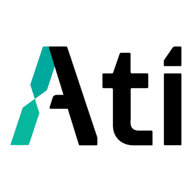
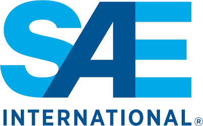

Robotics & Software Engineer
Giri
I build autonomy systems across perception, controls, motion planning, and the hardware they run on.
System Status
Loc: Bengaluru
>
Status:
ACTIVE // OPEN TO WORK
>
Focus:
ROS2, CV, controls
>
Current:
Autonomy Intern @ ATI
>
Academia:
IIITDM (9.07 CGPA)


About me
rigorous.
reflective.
builder.
Hardware instincts, software leverage, robotics as the meeting point.
Smart Manufacturing · IIITDM Chennai
Work & Education
experience.
work
education

Autonomy Intern
ATI Robotics
now
Research Student
ARM Lab · IIITDM
’26
Mechanical Intern
ATI Robotics
’25

Rollcage Lead
Revolt Racers · SAE
’25
Backend Dev
Value Vertex
’24
B.Tech, Smart Mfg.
IIITDM · CGPA 9.07
’26
Higher Secondary
Amrita · 94.2%
’22
recruiter scan
industry + research + build teams
Currently excited by
world models &
embodied AI.
Questions I am tracking beyond the current project list.
Good reads
papers &
books.
Books, papers, and articles shaping my engineering judgment.
Contact
let's talk.
For robotics, autonomy, and software roles.